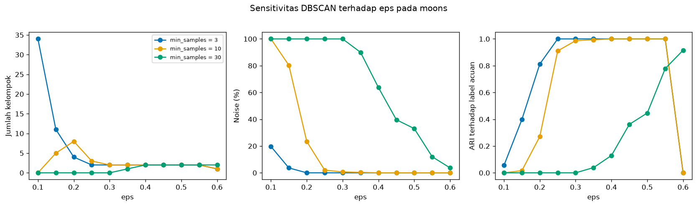
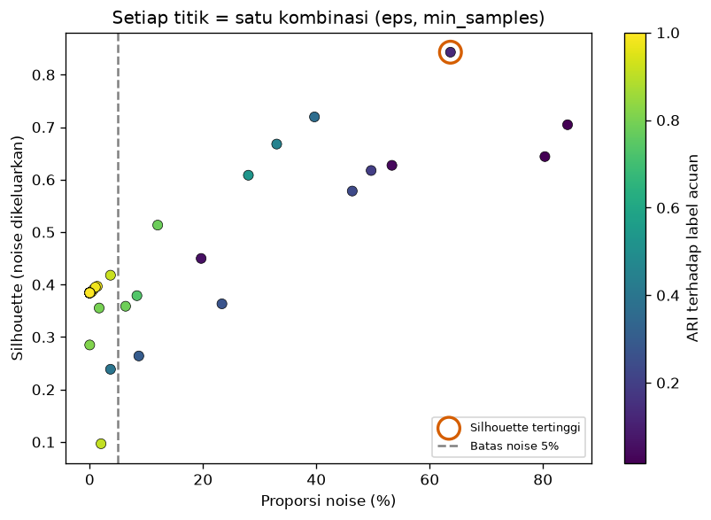

Bab 3 — Hyperparameter Tuning and Optimization¶
Learning Objectives¶
Setelah mempelajari bab ini, kamu mampu:
- Membedakan parameter (dipelajari model) dari hyperparameter (ditentukan manusia).
- Menyebutkan hyperparameter utama K-Means, DBSCAN, Hierarchical, GMM, dan Mean Shift beserta fungsinya.
- Melakukan pencarian parameter secara manual, dengan grid, dan dengan pengambilan acak (random).
- Melakukan analisis sensitivitas terhadap sebuah hyperparameter.
- Menyusun proses pencarian buatan sendiri untuk clustering memakai
ParameterGriddanParameterSampler. - Menjelaskan mengapa
GridSearchCVtidak boleh dipakai buta untuk clustering. - Menjelaskan bahaya mengoptimalkan satu metrik secara berlebihan, dan cara membatasinya.
- Menjelaskan mengapa satu metrik tidak cukup untuk memilih hyperparameter.
Introduction¶
Di Bab 2 kamu melihat bahwa mengubah eps pada DBSCAN dari 0,15 menjadi 0,3 mengubah hasil dari 16 kelompok menjadi 2. Pengaturan seperti eps itulah yang disebut hyperparameter. Memilihnya adalah salah satu keputusan paling berpengaruh dalam clustering.
Pada supervised learning, pemilihan hyperparameter punya "wasit" yang jelas: skor pada data uji. Pada clustering tidak ada wasit seperti itu. Kita hanya punya metrik internal (yang punya bias, Level 5) dan kadang label acuan (yang tidak boleh dipakai untuk menyetel). Karena itu tuning pada clustering lebih rumit, dan godaan untuk mengoptimalkan angka yang salah jauh lebih besar.
Bab ini mengajarkan cara menelusuri ruang hyperparameter dengan terencana, dan, yang sama pentingnya, cara tidak tertipu oleh hasilnya.
Prasyarat
Bab 2 Level 6 (desain dan pencatatan), Level 4 (algoritma), dan Level 5 (metrik). Bab ini memakai metrik Level 5 sebagai alat, tanpa mengulang teorinya.
Fundamental Concepts¶
| Istilah | Arti |
|---|---|
| Parameter | Nilai yang dipelajari model dari data. Di scikit-learn berakhiran _, misalnya cluster_centers_ |
| Hyperparameter | Pengaturan yang ditentukan manusia sebelum fit, misalnya n_clusters |
| Search space | Himpunan nilai hyperparameter yang akan dicoba |
| Grid search | Mencoba semua kombinasi dari daftar nilai |
| Random search | Mencoba kombinasi yang diambil acak dari distribusi |
| Sensitivity analysis | Melihat seberapa jauh hasil berubah bila satu hyperparameter diubah |
| Over-optimization | Memoles satu metrik sampai tinggi, tetapi hasilnya tidak bermakna |
| Constraint | Batasan yang ditulis lebih dulu (misalnya noise maksimum 5%) untuk mencegah solusi yang tidak masuk akal |
Detailed Explanation¶
Parameter vs hyperparameter¶
Bayangkan kamu mengatur mesin kopi. Hyperparameter adalah tombol yang kamu putar: jumlah air, tingkat gilingan. Parameter adalah hasil yang keluar dari mesin: rasa kopi. Kamu mengatur tombolnya, mesin menghasilkan hasilnya.
Pada K-Means:
- Hyperparameter:
n_clusters,init,n_init,max_iter. - Parameter hasil belajar:
cluster_centers_(posisi centroid),labels_,inertia_,n_iter_.
Hyperparameter tiap algoritma¶
| Algoritma | Hyperparameter | Fungsi |
|---|---|---|
| K-Means | n_clusters |
Jumlah kelompok |
init |
Cara memilih centroid awal ("k-means++" atau "random") |
|
n_init |
Berapa kali dijalankan dari awal berbeda. Hasil terbaik diambil | |
max_iter |
Batas iterasi dalam satu kali jalan | |
| DBSCAN | eps |
Radius tetangga |
min_samples |
Jumlah titik minimal dalam radius agar sebuah titik dianggap padat | |
| Hierarchical | n_clusters |
Di mana dendrogram dipotong |
linkage |
Cara mengukur jarak antar kelompok (ward, complete, average, single) |
|
metric |
Jarak antar titik. ward hanya mendukung euclidean |
|
| GMM | n_components |
Jumlah komponen Gaussian |
covariance_type |
Bentuk elips tiap komponen (spherical, diag, tied, full) |
|
reg_covar |
Angka kecil yang ditambahkan ke kovarians agar stabil | |
| Mean Shift | bandwidth |
Lebar jendela pencarian puncak kepadatan |
bin_seeding |
Mulai dari titik pada kisi kasar, bukan semua titik (lebih cepat) | |
min_bin_freq |
Dengan bin_seeding, abaikan sel kisi dengan titik lebih sedikit dari ini |
Hyperparameter menentukan definisi kelompok
Pada clustering, mengubah hyperparameter sering berarti mengubah definisi "kelompok". eps kecil berarti "kelompok = daerah yang sangat padat". bandwidth kecil berarti "banyak puncak kecil". Karena itu tidak ada nilai yang "benar" terlepas dari tujuanmu.
Mengapa pemilihan hyperparameter penting¶
Satu algoritma dengan hyperparameter berbeda bisa menghasilkan hasil yang jauh berbeda, sering lebih berbeda daripada dua algoritma berbeda. Maka membandingkan algoritma tanpa memperhatikan hyperparameter bisa menyesatkan (dibahas di Bab 4).
Tiga cara menelusuri hyperparameter¶
1. Pencarian manual. Kamu mencoba nilai, melihat gambar dan metrik, lalu menyesuaikan. Cocok untuk memahami perilaku, tetapi sulit diulang dan mudah bias.
2. Grid search. Tentukan daftar nilai tiap hyperparameter, jalankan semua kombinasi. Sistematis dan bisa diulang, tetapi jumlah kombinasi melonjak: 11 nilai eps × 6 nilai min_samples = 66 kombinasi.
3. Random search. Ambil kombinasi acak dari distribusi (misalnya eps seragam antara 0,1 dan 0,6). Lebih hemat saat ruangnya besar, dan menjelajah nilai di antara titik grid. Hasilnya bergantung pada seed pengambil sampel, jadi perlu diulang untuk melihat variasinya.
Analisis sensitivitas¶
Ubah satu hyperparameter, tahan yang lain, dan amati hasilnya. Tujuannya bukan mencari nilai terbaik, melainkan memahami kestabilan: apakah hasil berubah halus atau melompat? Wilayah di mana hasil stabil (misalnya eps 0,3 sampai 0,5 pada moons) lebih bisa dipercaya daripada nilai tunggal yang kebetulan tertinggi.
Memilih metrik untuk tuning¶
Metrik yang dipakai untuk memilih hyperparameter harus tidak memakai label acuan (kalau tidak, itu kebocoran informasi, Level 5 Bab 8). Pilihannya metrik internal. Tetapi setiap metrik punya bias:
- Silhouette dan DBI menyukai kelompok bulat dan bisa melonjak bila banyak titik dibuang sebagai noise.
- CHI cenderung naik bersama K pada data lemah.
- Inertia selalu turun saat K naik.
Karena itu: gunakan lebih dari satu metrik, ditambah batasan yang masuk akal, ditambah gambar.
Mengapa GridSearchCV tidak dipakai buta¶
GridSearchCV dirancang untuk supervised learning. Cara kerjanya: membagi data menjadi lipatan latih dan uji (cross-validation), melatih model di lipatan latih, lalu memberi skor di lipatan uji dengan predict dan label y. Pada clustering ada beberapa masalah:
- Tidak ada
yyang menjadi acuan skor. Kita butuh fungsi skor buatan sendiri. - Banyak algoritma tidak punya
predict. Kita buktikan di kode:DBSCANdanAgglomerativeClusteringtidak punyapredict(). - Memisahkan data menjadi lipatan mengubah struktur kepadatan dan jumlah titik, sehingga metrik berbasis jarak berbeda maknanya.
- Ia mengembalikan "parameter terbaik" seolah-olah itu jawaban, padahal pada clustering definisi "terbaik" tidak tunggal.
Secara teknis GridSearchCV bisa dipaksa dengan fungsi skor buatan sendiri, tetapi hasilnya mudah salah. Karena itu kita membuat proses pencarian sendiri yang sederhana: ulangi (1) bangun model dengan satu kombinasi, (2) jalankan fit_predict pada seluruh data, (3) hitung metrik, (4) catat. ParameterGrid dan ParameterSampler dari scikit-learn membantu menghasilkan kombinasinya.
Over-optimization¶
Bayangkan DBSCAN dengan min_samples besar. Ia menandai sebagian besar titik sebagai noise, dan hanya menyisakan inti terpadat. Silhouette yang dihitung hanya pada sisa titik itu bisa sangat tinggi, padahal sebagian besar data diabaikan. Bila kita mengejar skor tertinggi tanpa batasan, algoritma "menang" dengan membuang data. Inilah over-optimization: skor naik, makna turun.
Penangkalnya:
- Tetapkan batasan sebelum melihat hasil: misalnya "noise paling banyak 5%" dan "2 sampai 10 kelompok".
- Laporkan beberapa metrik, bukan satu.
- Selalu lihat proporsi noise dan jumlah kelompok.
- Periksa gambar.
Kesalahan umum¶
- Mengoptimalkan satu metrik tanpa batasan.
- Memakai label acuan untuk memilih hyperparameter.
- Memakai
GridSearchCVtanpa memahami asumsinya. - Mencari terlalu banyak kombinasi lalu melaporkan hanya yang terbaik.
- Tidak melihat wilayah stabil dan hanya nilai tunggal.
- Tidak mencatat ruang pencarian dan seed.
- Melupakan bahwa pencarian acak bergantung pada seed pengambil sampel.
Mathematical Foundation¶
Bab ini hanya memerlukan satu gagasan matematis ringan: ukuran ruang pencarian. Jika ada \( m \) hyperparameter dan hyperparameter ke-\( j \) punya \( n_j \) nilai, grid search menjalankan
kombinasi. Contohnya eps dengan 11 nilai dan min_samples dengan 6 nilai memberi \( N = 11 \times 6 = 66 \). Menambah satu hyperparameter dengan 5 nilai membuatnya 330. Inilah alasan grid search tidak cocok untuk banyak hyperparameter, dan random search dengan jumlah percobaan tetap (misalnya 20) menjadi alternatif. Selain itu, semakin banyak kombinasi yang dicoba, semakin besar peluang menemukan satu kombinasi yang kebetulan tinggi pada suatu metrik. Itulah satu alasan lagi batasan dan beberapa metrik penting.
Experimental Procedure¶
- Memahami hyperparameter: tampilkan hyperparameter dan parameter hasil belajar K-Means.
- Eksplorasi hyperparameter tiap algoritma pada dataset yang sesuai:
- K-Means (
init,n_init,max_iter) pada enam gerombol yang sebagian bertumpuk. - Hierarchical (
linkage,metric) pada moons. - GMM (
covariance_type,reg_covar,n_components) pada gerombol miring. - Mean Shift (
bandwidth,bin_seeding,min_bin_freq) pada tiga gerombol. - Grid search DBSCAN pada moons: 66 kombinasi, dicatat ke CSV.
- Pemilihan tanpa batasan (Silhouette dan DBI) dan dengan batasan (noise paling banyak 5%, 2 sampai 10 kelompok).
- Random search: 20 kombinasi, diulang dengan lima seed pengambil sampel.
- Satu metrik tidak cukup: pilih K pada K-Means memakai tiga metrik.
- Mengapa
GridSearchCVtidak dipakai buta: periksapredict(). - Sensitivitas dan peta pemilihan: gambar.
Python Implementation¶
Skrip lengkapnya ada di examples/level-6/03_hyperparameter_tuning_and_optimization.py, dan notebook-nya di notebooks/level-6/03-hyperparameter-tuning-and-optimization.ipynb. Setiap potongan kode diikuti penjelasannya.
Konteks masalah: memilih hyperparameter tanpa label benar, dan tanpa tertipu oleh satu metrik.
Tujuan eksperimen: memahami efek hyperparameter lima algoritma, membangun pencarian sendiri, dan memperlihatkan bahaya over-optimization.
Dataset (dan alasannya):
- Enam gerombol bulat yang sebagian bertumpuk (
make_blobs, 600 titik): inisialisasi K-Means paling terlihat pengaruhnya di sini, dan K sebenarnya (6) diketahui. - Moons (300 titik): bentuk non-bulat, cocok untuk DBSCAN dan linkage.
- Gerombol miring (
make_blobsdikalikan matriks): berbentuk elips, supayacovariance_typeGMM berpengaruh. - Tiga gerombol bulat (400 titik): untuk
bandwidthMean Shift.
Semua sintetis dan punya label acuan, yang hanya dipakai untuk menilai setelah pemilihan.
Pustaka: NumPy, pandas, Matplotlib, SciPy (hanya scipy.stats untuk distribusi pencarian acak, SciPy sudah ada di proyek), scikit-learn.
Bagian A — Siapkan alat¶
import numpy as np
import pandas as pd
import matplotlib.pyplot as plt
from scipy.stats import randint, uniform
from sklearn.cluster import DBSCAN, AgglomerativeClustering, KMeans, MeanShift, estimate_bandwidth
from sklearn.datasets import make_blobs, make_moons
from sklearn.metrics import adjusted_rand_score
from sklearn.mixture import GaussianMixture
from sklearn.model_selection import ParameterGrid, ParameterSampler
from sklearn.preprocessing import StandardScaler
import _experiment as ex
SEED = 42
Penjelasan: uniform dan randint dari scipy.stats adalah distribusi yang bisa diambil sampelnya oleh ParameterSampler. ParameterGrid membuat semua kombinasi. estimate_bandwidth memperkirakan bandwidth Mean Shift. _experiment adalah alat pencatat dari Bab 2.
Bagian B — Parameter vs hyperparameter¶
model = KMeans(n_clusters=3, n_init=10, random_state=SEED)
print("Hyperparameter (kamu yang menentukan, sebelum fit):")
params = model.get_params()
print({name: params[name] for name in ["n_clusters", "init", "n_init", "max_iter", "tol", "random_state"]})
X_demo, _ = make_blobs(n_samples=200, centers=3, random_state=SEED)
model.fit(X_demo)
print("Parameter yang DIPELAJARI (hasil fit, berakhiran _):")
print(" cluster_centers_ bentuk :", model.cluster_centers_.shape)
print(f" inertia_ : {model.inertia_:.2f}")
print(" n_iter_ :", model.n_iter_)
Hyperparameter (kamu yang menentukan, sebelum fit):
{'n_clusters': 3, 'init': 'k-means++', 'n_init': 10, 'max_iter': 300, 'tol': 0.0001, 'random_state': 42}
Parameter yang DIPELAJARI (hasil fit, berakhiran _):
cluster_centers_ bentuk : (3, 2)
inertia_ : 364.47
n_iter_ : 2
Penjelasan: model.get_params() mengembalikan semua hyperparameter dalam dictionary. Kita hanya menampilkan enam. Setelah fit, atribut berakhiran garis bawah seperti cluster_centers_, inertia_, dan n_iter_ muncul. Itu parameter hasil belajar. Konvensi scikit-learn: tanda _ di akhir berarti "baru ada setelah fit".
Bagian C — Hyperparameter K-Means¶
# Data dengan enam gerombol yang sebagian bertumpuk, supaya pengaruh inisialisasi terlihat
X_six, y_six = make_blobs(n_samples=600, centers=6, cluster_std=1.6, random_state=SEED)
rows = []
for init in ["random", "k-means++"]:
for n_init in [1, 10]:
inertias = [KMeans(n_clusters=6, init=init, n_init=n_init, random_state=seed).fit(X_six).inertia_ for seed in range(20)]
rows.append({"init": init, "n_init": n_init, "inertia terkecil": min(inertias), "inertia terbesar": max(inertias),
"seed yang mencapai terkecil": sum(abs(v - min(inertias)) < 1e-6 for v in inertias)})
print(pd.DataFrame(rows).round(2).to_string(index=False))
for max_iter in [1, 2, 5, 300]:
model = KMeans(n_clusters=6, init="random", n_init=1, max_iter=max_iter, random_state=SEED).fit(X_six)
print(f"max_iter = {max_iter:3d}: n_iter_ = {model.n_iter_}, inertia = {model.inertia_:.2f}")
init n_init inertia terkecil inertia terbesar seed yang mencapai terkecil
random 1 2398.51 3358.04 2
random 10 2398.51 2399.72 17
k-means++ 1 2398.51 3004.09 3
k-means++ 10 2398.51 2398.71 18
max_iter = 1: n_iter_ = 1, inertia = 3379.91
max_iter = 2: n_iter_ = 2, inertia = 3365.88
max_iter = 5: n_iter_ = 5, inertia = 3358.04
max_iter = 300: n_iter_ = 6, inertia = 3358.04
Penjelasan:
- Untuk setiap kombinasi
initdann_init, kita menjalankan K-Means dengan 20 seed berbeda (for seed in range(20)) dan mengumpulkaninertia_. min(inertias)danmax(inertias)memberi rentang.sum(abs(v - min(inertias)) < 1e-6 for v in inertias)menghitung berapa seed yang mencapai hasil terbaik (selisih lebih kecil dari1e-6dianggap sama).- Perulangan
max_itermemakain_init=1daninit="random"agar efek iterasi terlihat.model.n_iter_adalah jumlah iterasi yang benar-benar dipakai.
Bagian D — Hyperparameter Hierarchical¶
X_moons_raw, y_moons = make_moons(n_samples=300, noise=0.06, random_state=SEED)
X_moons = StandardScaler().fit_transform(X_moons_raw)
rows = []
for linkage, metric in [("ward", "euclidean"), ("complete", "euclidean"), ("complete", "manhattan"),
("average", "euclidean"), ("average", "cosine"), ("single", "euclidean")]:
labels = AgglomerativeClustering(n_clusters=2, linkage=linkage, metric=metric).fit_predict(X_moons)
rows.append({"linkage": linkage, "metric": metric, "ARI acuan": adjusted_rand_score(y_moons, labels),
"ukuran kelompok": sorted(np.bincount(labels).tolist())})
print(pd.DataFrame(rows).round(3).to_string(index=False))
linkage metric ARI acuan ukuran kelompok
ward euclidean 0.425 [98, 202]
complete euclidean 0.607 [137, 163]
complete manhattan 0.597 [116, 184]
average euclidean 0.576 [114, 186]
average cosine 0.425 [134, 166]
single euclidean 1.000 [150, 150]
Penjelasan: kita mencoba kombinasi linkage dan metric yang valid. ward hanya boleh dengan euclidean, jadi hanya satu pasangan untuknya. metric="cosine" mengukur sudut, bukan jarak. sorted(np.bincount(labels).tolist()) menampilkan ukuran kelompok. ARI acuan dipakai untuk menilai.
Bagian E — Hyperparameter GMM¶
# Gerombol miring (anisotropik): bentuknya elips, bukan bulat
X_a, y_a = make_blobs(n_samples=500, centers=3, cluster_std=1.0, random_state=SEED)
X_aniso = X_a @ np.array([[0.6, -0.6], [-0.4, 0.8]])
rows = []
for covariance_type in ["spherical", "diag", "tied", "full"]:
labels = GaussianMixture(n_components=3, covariance_type=covariance_type, random_state=SEED).fit_predict(X_aniso)
rows.append({"covariance_type": covariance_type, "ARI acuan": adjusted_rand_score(y_a, labels)})
print(pd.DataFrame(rows).round(3).to_string(index=False))
for reg_covar in [1e-6, 1e-3, 1e-1, 1.0]:
labels = GaussianMixture(n_components=3, covariance_type="full", reg_covar=reg_covar, random_state=SEED).fit_predict(X_aniso)
print(f"reg_covar = {reg_covar:g}: ARI acuan = {adjusted_rand_score(y_a, labels):.3f}")
for n_components in [2, 3, 4, 6]:
labels = GaussianMixture(n_components=n_components, covariance_type="full", random_state=SEED).fit_predict(X_aniso)
print(f"n_components = {n_components}: ARI acuan = {adjusted_rand_score(y_a, labels):.3f}")
covariance_type ARI acuan
spherical 0.947
diag 0.982
tied 1.000
full 1.000
reg_covar = 1e-06: ARI acuan = 1.000
reg_covar = 0.001: ARI acuan = 1.000
reg_covar = 0.1: ARI acuan = 1.000
reg_covar = 1: ARI acuan = 0.942
n_components = 2: ARI acuan = 0.571
n_components = 3: ARI acuan = 1.000
n_components = 4: ARI acuan = 0.874
n_components = 6: ARI acuan = 0.582
Penjelasan: X_a @ np.array([[...]]) mengalikan data dengan matriks transformasi sehingga gerombol menjadi elips miring (operator @ adalah perkalian matriks). Lalu kita mengubah covariance_type, reg_covar, dan n_components satu per satu. {reg_covar:g} mencetak angka dalam format ringkas.
Bagian F — Hyperparameter Mean Shift¶
X_b3, y_b3 = make_blobs(n_samples=400, centers=3, cluster_std=1.0, random_state=SEED)
print("estimate_bandwidth(quantile=0.2):", round(estimate_bandwidth(X_b3, quantile=0.2, random_state=SEED), 3))
rows = []
for bandwidth in [0.5, 1.0, 2.0, 4.0, 8.0]:
labels = MeanShift(bandwidth=bandwidth).fit_predict(X_b3)
rows.append({"bandwidth": bandwidth, "jumlah kelompok": len(set(labels)), "ARI acuan": adjusted_rand_score(y_b3, labels)})
print(pd.DataFrame(rows).round(3).to_string(index=False))
for bin_seeding, min_bin_freq in [(False, 1), (True, 1), (True, 5), (True, 20)]:
labels = MeanShift(bandwidth=2.0, bin_seeding=bin_seeding, min_bin_freq=min_bin_freq).fit_predict(X_b3)
print(f"bin_seeding = {bin_seeding!s:5}, min_bin_freq = {min_bin_freq:2d}: {len(set(labels))} kelompok, ARI acuan = {adjusted_rand_score(y_b3, labels):.3f}")
estimate_bandwidth(quantile=0.2): 1.878
bandwidth jumlah kelompok ARI acuan
0.5 69 0.085
1.0 7 0.916
2.0 3 1.000
4.0 3 1.000
8.0 2 0.569
bin_seeding = False, min_bin_freq = 1: 3 kelompok, ARI acuan = 1.000
bin_seeding = True , min_bin_freq = 1: 3 kelompok, ARI acuan = 1.000
bin_seeding = True , min_bin_freq = 5: 3 kelompok, ARI acuan = 1.000
bin_seeding = True , min_bin_freq = 20: 3 kelompok, ARI acuan = 1.000
Penjelasan: estimate_bandwidth(X, quantile=0.2) memperkirakan bandwidth dari data. Kemudian kita mencoba lima bandwidth, dan beberapa kombinasi bin_seeding dan min_bin_freq. {bin_seeding!s:5} mengubah True/False menjadi teks selebar 5 karakter.
Bagian G — Grid search DBSCAN¶
# Pencarian grid DBSCAN pada moons. Metrik internal untuk memilih, ARI hanya untuk menilai kemudian.
grid = ParameterGrid({"eps": [round(v, 2) for v in np.arange(0.10, 0.61, 0.05)], "min_samples": [3, 5, 10, 15, 20, 30]})
print("Jumlah kombinasi:", len(grid))
def evaluate_dbscan(params):
labels = DBSCAN(**params).fit_predict(X_moons)
scores = ex.internal_scores(X_moons, labels)
scores["ari_reference"] = adjusted_rand_score(y_moons, labels)
return {**params, **scores}
grid_table = pd.DataFrame([evaluate_dbscan(p) for p in grid])
print("Kombinasi dengan Silhouette bisa dihitung:", int(grid_table["silhouette"].notna().sum()), "dari", len(grid_table))
Penjelasan:
np.arange(0.10, 0.61, 0.05)menghasilkan 0,10; 0,15; ...; 0,60 (11 nilai).round(v, 2)membersihkan angka desimal.ParameterGrid({...})membuat 66 kombinasi, danlen(grid)menghitungnya.evaluate_dbscan(params):DBSCAN(**params)membangun model dari dictionary,fit_predictmelatihnya pada seluruh data,ex.internal_scoresmenghitung metrik internal, danadjusted_rand_scorehanya mencatat ARI acuan untuk penilaian setelahnya.{**params, **scores}menggabungkan dua dictionary.grid_tableberisi satu baris per kombinasi. KolomsilhouettebernilaiNaNbila kurang dari dua kelompok.
Bagian H — Pemilihan tanpa batasan¶
valid = grid_table.dropna(subset=["silhouette"])
cols = ["eps", "min_samples", "n_clusters", "noise_fraction", "silhouette", "davies_bouldin", "ari_reference"]
print("Dipilih dengan Silhouette tertinggi (tanpa batasan):")
print(valid.sort_values("silhouette", ascending=False).head(3)[cols].round(3).to_string(index=False))
print("Dipilih dengan Davies-Bouldin terendah (tanpa batasan):")
print(valid.sort_values("davies_bouldin").head(3)[cols].round(3).to_string(index=False))
Dipilih dengan Silhouette tertinggi (tanpa batasan):
eps min_samples n_clusters noise_fraction silhouette davies_bouldin ari_reference
0.40 30 2 0.637 0.843 0.231 0.129
0.45 30 2 0.397 0.720 0.427 0.362
0.20 15 3 0.843 0.705 0.416 0.020
Dipilih dengan Davies-Bouldin terendah (tanpa batasan):
eps min_samples n_clusters noise_fraction silhouette davies_bouldin ari_reference
0.40 30 2 0.637 0.843 0.231 0.129
0.20 15 3 0.843 0.705 0.416 0.020
0.45 30 2 0.397 0.720 0.427 0.362
Penjelasan: dropna(subset=["silhouette"]) membuang baris yang metriknya tidak bisa dihitung. sort_values("silhouette", ascending=False).head(3) mengambil tiga terbaik menurut Silhouette. Davies-Bouldin diurutkan naik (sort_values("davies_bouldin")) karena rendah lebih baik.
Bagian I — Pemilihan dengan batasan¶
# Batasan yang masuk akal, ditetapkan SEBELUM melihat hasil: noise paling banyak 5%, 2 sampai 10 kelompok
allowed = valid[(valid["noise_fraction"] <= 0.05) & valid["n_clusters"].between(2, 10)]
print("Kombinasi yang memenuhi batasan:", len(allowed), "dari", len(valid))
print("Dipilih dengan Silhouette tertinggi di antara yang memenuhi batasan:")
print(allowed.sort_values("silhouette", ascending=False).head(3)[cols].round(3).to_string(index=False))
print("Dari kombinasi yang memenuhi batasan, ARI acuan terbesar adalah:", round(allowed["ari_reference"].max(), 3))
Kombinasi yang memenuhi batasan: 34 dari 50
Dipilih dengan Silhouette tertinggi di antara yang memenuhi batasan:
eps min_samples n_clusters noise_fraction silhouette davies_bouldin ari_reference
0.60 30 2 0.037 0.418 0.941 0.916
0.35 15 2 0.013 0.397 0.992 0.974
0.45 20 2 0.010 0.395 0.998 0.980
Dari kombinasi yang memenuhi batasan, ARI acuan terbesar adalah: 1.0
Penjelasan: batasan ditulis sebelum melihat hasil: noise_fraction <= 0.05 dan n_clusters.between(2, 10). Operator & menggabungkan dua syarat. Kita memilih Silhouette tertinggi hanya di antara kombinasi yang memenuhi batasan.
Bagian J — Pencarian acak¶
# Pencarian acak: 20 kombinasi dari distribusi, diulang dengan seed pengambil sampel berbeda
space = {"eps": uniform(0.10, 0.50), "min_samples": randint(3, 31)}
rows = []
for sampler_seed in range(5):
sampled = list(ParameterSampler(space, n_iter=20, random_state=sampler_seed))
table = pd.DataFrame([evaluate_dbscan({"eps": round(p["eps"], 3), "min_samples": int(p["min_samples"])}) for p in sampled])
table = table.dropna(subset=["silhouette"])
table = table[(table["noise_fraction"] <= 0.05) & table["n_clusters"].between(2, 10)]
best = table.sort_values("silhouette", ascending=False).iloc[0]
rows.append({"seed sampler": sampler_seed, "eps": best["eps"], "min_samples": int(best["min_samples"]),
"silhouette": best["silhouette"], "ARI acuan": best["ari_reference"]})
print(pd.DataFrame(rows).round(3).to_string(index=False))
seed sampler eps min_samples silhouette ARI acuan
0 0.292 9 0.391 0.987
1 0.584 25 0.386 0.993
2 0.389 17 0.401 0.967
3 0.479 19 0.389 0.993
4 0.457 21 0.395 0.980
Penjelasan:
spacemendefinisikan distribusi:uniform(0.10, 0.50)berartiepsdiambil seragam antara 0,10 dan 0,60 (argumennya awal dan lebar).randint(3, 31)memberi bilangan bulat 3 sampai 30.ParameterSampler(space, n_iter=20, random_state=sampler_seed)mengambil 20 kombinasi. Kita ulangi dengan lima seed berbeda untuk melihat variasinya.- Untuk tiap seed, kita menerapkan batasan yang sama dan memilih Silhouette tertinggi.
Bagian K — Satu metrik tidak cukup¶
rows = []
for k in range(2, 11):
labels = KMeans(n_clusters=k, n_init=10, random_state=SEED).fit_predict(X_six)
scores = ex.internal_scores(X_six, labels)
rows.append({"K": k, "Silhouette": scores["silhouette"], "Davies-Bouldin": scores["davies_bouldin"],
"Calinski-Harabasz": scores["calinski_harabasz"], "ARI acuan": adjusted_rand_score(y_six, labels)})
k_table = pd.DataFrame(rows).set_index("K")
print(k_table.round(3).to_string())
print("K terbaik menurut Silhouette :", int(k_table["Silhouette"].idxmax()))
print("K terbaik menurut Davies-Bouldin :", int(k_table["Davies-Bouldin"].idxmin()))
print("K terbaik menurut Calinski-Harabasz :", int(k_table["Calinski-Harabasz"].idxmax()))
Silhouette Davies-Bouldin Calinski-Harabasz ARI acuan
K
2 0.498 0.922 549.895 0.331
3 0.653 0.458 1557.313 0.463
4 0.602 0.530 1956.613 0.655
5 0.543 0.658 1889.006 0.725
6 0.489 0.747 1853.456 0.718
7 0.461 0.803 1710.481 0.651
8 0.437 0.897 1613.578 0.597
9 0.367 1.038 1551.070 0.523
10 0.343 1.036 1519.103 0.500
K terbaik menurut Silhouette : 3
K terbaik menurut Davies-Bouldin : 3
K terbaik menurut Calinski-Harabasz : 4
Penjelasan: untuk K = 2 sampai 10 pada enam gerombol, kita menghitung tiga metrik dan ARI acuan, lalu melihat K terbaik menurut masing-masing metrik. idxmax() dan idxmin() mengembalikan K dengan nilai tertinggi atau terendah.
Bagian L — Mengapa GridSearchCV tidak dipakai buta¶
for name, estimator in [("KMeans", KMeans()), ("GaussianMixture", GaussianMixture()), ("MeanShift", MeanShift()),
("DBSCAN", DBSCAN()), ("AgglomerativeClustering", AgglomerativeClustering())]:
print(f"{name:24s} punya predict(): {hasattr(estimator, 'predict')}")
KMeans punya predict(): True
GaussianMixture punya predict(): True
MeanShift punya predict(): True
DBSCAN punya predict(): False
AgglomerativeClustering punya predict(): False
Penjelasan: hasattr(objek, "predict") bernilai True bila objek punya method predict.
Bagian M — Menyimpan hasil¶
grid_table.insert(0, "experiment_id", [f"GRID-{i:02d}" for i in range(1, len(grid_table) + 1)])
grid_table.to_csv(ex.RESULTS_DIR / "03_dbscan_grid.csv", index=False)
ex.save_json({"seed": SEED, "dataset": "make_moons(n_samples=300, noise=0.06) + StandardScaler",
"space": "eps 0.10..0.60 langkah 0.05, min_samples [3,5,10,15,20,30]",
"constraint": "noise <= 5% dan 2..10 kelompok", "fingerprint": ex.dataset_fingerprint(X_moons)}, "03_search_config")
print("Hasil pencarian grid disimpan:", len(grid_table), "baris")
Penjelasan: seluruh 66 baris hasil grid disimpan ke results/03_dbscan_grid.csv, bersama konfigurasi pencarian (ruang, batasan, sidik jari data) ke JSON.
Bagian N — Gambar¶
palette = ["#0072B2", "#E69F00", "#009E73", "#CC79A7", "#D55E00", "#56B4E9"]
fig, axes = plt.subplots(1, 3, figsize=(14, 4))
for color, min_samples in zip(palette, [3, 10, 30]):
part = grid_table[grid_table["min_samples"] == min_samples].sort_values("eps")
axes[0].plot(part["eps"], part["n_clusters"], marker="o", color=color, label=f"min_samples = {min_samples}")
axes[1].plot(part["eps"], part["noise_fraction"] * 100, marker="o", color=color)
axes[2].plot(part["eps"], part["ari_reference"], marker="o", color=color)
axes[0].set_ylabel("Jumlah kelompok")
axes[1].set_ylabel("Noise (%)")
axes[2].set_ylabel("ARI terhadap label acuan")
for ax in axes:
ax.set_xlabel("eps")
axes[0].legend(fontsize=8)
fig.suptitle("Sensitivitas DBSCAN terhadap eps pada moons", y=1.02)
plt.tight_layout()
plt.show()

fig, ax = plt.subplots(figsize=(7, 5))
points = ax.scatter(valid["noise_fraction"] * 100, valid["silhouette"], c=valid["ari_reference"], cmap="viridis", s=45, edgecolor="black", linewidth=0.4)
top = valid.sort_values("silhouette", ascending=False).iloc[0]
ax.scatter([top["noise_fraction"] * 100], [top["silhouette"]], s=220, facecolors="none", edgecolors="#D55E00", linewidths=2, label="Silhouette tertinggi")
ax.axvline(5, color="gray", linestyle="--", label="Batas noise 5%")
ax.set_xlabel("Proporsi noise (%)")
ax.set_ylabel("Silhouette (noise dikeluarkan)")
ax.set_title("Setiap titik = satu kombinasi (eps, min_samples)")
ax.legend(fontsize=8, loc="lower right")
fig.colorbar(points, label="ARI terhadap label acuan")
plt.tight_layout()
plt.show()

Penjelasan: gambar pertama menampilkan tiga kurva (jumlah kelompok, noise, ARI) terhadap eps untuk tiga nilai min_samples. Gambar kedua menggambar setiap kombinasi sebagai satu titik: sumbu x proporsi noise, sumbu y Silhouette, warna ARI acuan. c=..., cmap="viridis" mewarnai titik menurut ARI. Lingkaran oranye menandai kombinasi Silhouette tertinggi.
Code Explanation¶
| Bagian kode | Peran |
|---|---|
model.get_params() |
Hyperparameter sebuah model |
model.cluster_centers_, inertia_ |
Parameter hasil belajar |
ParameterGrid(...) |
Semua kombinasi (grid search) |
ParameterSampler(space, n_iter, random_state) |
Kombinasi acak (random search) |
evaluate_dbscan(params) |
Satu langkah pencarian: bangun, fit_predict, nilai, catat |
noise_fraction <= 0.05 dan n_clusters.between(2, 10) |
Batasan yang ditulis lebih dulu |
hasattr(estimator, "predict") |
Memeriksa kemampuan predict |
Pelatihan vs penilaian
fit_predict melatih model tanpa label acuan. Metrik internal dipakai untuk memilih. ARI acuan hanya dihitung untuk menilai pilihan itu setelahnya.
How to Run¶
Dari folder utama proyek (setelah mengaktifkan lingkungan virtual):
pip install -r requirements-notebooks.txt
python examples/level-6/03_hyperparameter_tuning_and_optimization.py
Skrip mencetak output ke terminal, menyimpan dua gambar ke docs/assets/level-6/, dan menyimpan hasil ke examples/level-6/results/. Notebook interaktifnya:
Semua output pada bab ini berasal dari eksekusi nyata dengan Python 3.14, NumPy 2.5.4, pandas 3.1.1, scikit-learn 1.9.1, SciPy 1.18.1, dan Matplotlib 3.11.2.
Expected Output¶
Output setiap langkah ditampilkan langsung di bawah kodenya pada bagian Python Implementation.
Gambar yang dihasilkan:
Interpretasi output¶
1. Parameter vs hyperparameter. Hyperparameter K-Means: n_clusters=3, init='k-means++', n_init=10, max_iter=300, tol=0.0001, random_state=42. Setelah fit: cluster_centers_ berbentuk (3, 2), inertia_ 364,47, n_iter_ 2.
2. K-Means: init, n_init, max_iter. Dari 20 seed:
init |
n_init |
Inertia terkecil | Inertia terbesar | Seed yang mencapai terkecil |
|---|---|---|---|---|
| random | 1 | 2398,51 | 3358,04 | 2 dari 20 |
| random | 10 | 2398,51 | 2399,72 | 17 dari 20 |
| k-means++ | 1 | 2398,51 | 3004,09 | 3 dari 20 |
| k-means++ | 10 | 2398,51 | 2398,71 | 18 dari 20 |
Dengan n_init=1, hasil terburuk bisa jauh lebih buruk (3358,04 vs 2398,51) dan hanya 2 sampai 3 dari 20 seed mencapai hasil terbaik. Dengan n_init=10, 17 sampai 18 dari 20 seed mencapainya. k-means++ sedikit lebih baik daripada random. Jadi n_init mengurangi kebisingan akibat seed. Pada max_iter: nilai 1 dan 2 menghentikan algoritma sebelum konvergen (inertia 3379,91 dan 3365,88), nilai 5 dan 300 sama-sama 3358,04 karena algoritma sudah konvergen pada iterasi ke-6 (n_iter_ = 6).
3. Hierarchical: linkage dan metric (moons).
linkage |
metric |
ARI acuan | Ukuran kelompok |
|---|---|---|---|
| ward | euclidean | 0,425 | 98, 202 |
| complete | euclidean | 0,607 | 137, 163 |
| complete | manhattan | 0,597 | 116, 184 |
| average | euclidean | 0,576 | 114, 186 |
| average | cosine | 0,425 | 134, 166 |
| single | euclidean | 1,000 | 150, 150 |
linkage berpengaruh besar, dan metric juga mengubah hasil (average dengan cosine jauh lebih buruk dari dengan euclidean).
4. GMM. Pada gerombol miring: covariance_type = spherical 0,947, diag 0,982, tied 1,000, full 1,000. Bentuk kovarians yang lebih fleksibel menangkap elips miring lebih baik. reg_covar: 1e-6, 0,001, dan 0,1 sama-sama 1,000, tetapi reg_covar = 1 turun menjadi 0,942: regularisasi terlalu besar "menggembungkan" kelompok. n_components: 2 → 0,571; 3 → 1,000; 4 → 0,874; 6 → 0,582. Jumlah komponen yang tepat (3) memberi hasil terbaik.
5. Mean Shift. estimate_bandwidth memberi 1,878.
bandwidth |
Kelompok | ARI acuan |
|---|---|---|
| 0,5 | 69 | 0,085 |
| 1,0 | 7 | 0,916 |
| 2,0 | 3 | 1,000 |
| 4,0 | 3 | 1,000 |
| 8,0 | 2 | 0,569 |
bandwidth terlalu kecil memecah data menjadi 69 kelompok, terlalu besar menggabungkan menjadi 2. Ada dataran stabil antara 2,0 dan 4,0. bin_seeding dan min_bin_freq (1, 5, 20) tidak mengubah hasil pada data ini (3 kelompok, ARI 1,000). Pengaruh utamanya biasanya pada kecepatan, tidak diukur di sini.
6. Grid search DBSCAN. 66 kombinasi. Silhouette hanya bisa dihitung pada 50 dari 66: 16 kombinasi menghasilkan kurang dari dua kelompok (misalnya semuanya noise atau semuanya satu kelompok).
7. Pemilihan tanpa batasan: bahaya over-optimization.
| Peringkat Silhouette | eps |
min_samples |
Kelompok | Noise | Silhouette | DBI | ARI acuan |
|---|---|---|---|---|---|---|---|
| 1 | 0,40 | 30 | 2 | 63,7% | 0,843 | 0,231 | 0,129 |
| 2 | 0,45 | 30 | 2 | 39,7% | 0,720 | 0,427 | 0,362 |
| 3 | 0,20 | 15 | 3 | 84,3% | 0,705 | 0,416 | 0,020 |
Pemenang menurut Silhouette (0,843) maupun DBI (0,231) adalah kombinasi yang membuang 63,7% data sebagai noise, dan ARI-nya hanya 0,129. Peringkat tiga bahkan membuang 84,3% data. Silhouette dan DBI dihitung hanya pada titik yang tersisa, sehingga makin banyak data dibuang, makin tinggi skornya. Inilah over-optimization. Gambar peta pemilihan memperlihatkannya: titik dengan Silhouette tertinggi berada jauh di kanan (noise besar), dengan warna ARI rendah.
8. Pemilihan dengan batasan (noise ≤ 5%, 2 sampai 10 kelompok). Sebanyak 34 dari 50 kombinasi memenuhi batasan.
| Peringkat Silhouette | eps |
min_samples |
Kelompok | Noise | Silhouette | ARI acuan |
|---|---|---|---|---|---|---|
| 1 | 0,60 | 30 | 2 | 3,7% | 0,418 | 0,916 |
| 2 | 0,35 | 15 | 2 | 1,3% | 0,397 | 0,974 |
| 3 | 0,45 | 20 | 2 | 1,0% | 0,395 | 0,980 |
Dengan batasan, pemenang jauh lebih masuk akal (ARI 0,916 sampai 0,980). Namun ARI terbesar di antara kombinasi yang memenuhi batasan adalah 1,000, dan itu bukan pemenang Silhouette. Jadi bahkan dengan batasan, memilih dengan Silhouette tidak menemukan kombinasi terbaik menurut label acuan. Pemenang Silhouette (0,418) memang cukup baik, tetapi bukan yang terbaik. Ini mengingatkan bahwa metrik internal adalah penuntun, bukan penentu.
9. Random search (20 kombinasi, lima seed pengambil sampel, dengan batasan sama).
| Seed sampler | eps terpilih |
min_samples |
Silhouette | ARI acuan |
|---|---|---|---|---|
| 0 | 0,292 | 9 | 0,391 | 0,987 |
| 1 | 0,584 | 25 | 0,386 | 0,993 |
| 2 | 0,389 | 17 | 0,401 | 0,967 |
| 3 | 0,479 | 19 | 0,389 | 0,993 |
| 4 | 0,457 | 21 | 0,395 | 0,980 |
Hasil terpilih berbeda-beda antar seed (eps dari 0,292 sampai 0,584), tetapi semuanya berada di wilayah stabil dengan ARI 0,967 sampai 0,993. Pencarian acak menemukan kombinasi yang berbeda dari grid, namun serupa mutunya. Konsisten dengan analisis sensitivitas: banyak nilai yang "cukup baik".
10. Satu metrik tidak cukup (K-Means pada enam gerombol bertumpuk, K sebenarnya = 6).
| K | Silhouette | DBI | CHI | ARI acuan |
|---|---|---|---|---|
| 2 | 0,498 | 0,922 | 549,9 | 0,331 |
| 3 | 0,653 | 0,458 | 1557,3 | 0,463 |
| 4 | 0,602 | 0,530 | 1956,6 | 0,655 |
| 5 | 0,543 | 0,658 | 1889,0 | 0,725 |
| 6 | 0,489 | 0,747 | 1853,5 | 0,718 |
| 7 | 0,461 | 0,803 | 1710,5 | 0,651 |
(K = 8 sampai 10 sengaja tidak ditampilkan di tabel ini, lihat output untuk nilai lengkapnya.) Silhouette dan DBI memilih K = 3, CHI memilih K = 4, sedangkan ARI acuan tertinggi di K = 5 (0,725), dan jumlah gerombol sebenarnya 6. Tiga metrik tidak sepakat, dan tidak satu pun menemukan K = 6. Gerombol yang sebagian bertumpuk membuat metrik internal memilih K yang lebih kecil. Tidak ada satu metrik yang cukup.
11. predict() dan GridSearchCV. KMeans, GaussianMixture, dan MeanShift punya predict() (True). DBSCAN dan AgglomerativeClustering tidak (False). GridSearchCV yang mengandalkan predict pada lipatan uji tidak bisa langsung dipakai untuk dua algoritma itu.
12. Sensitivitas eps. Pada gambar: untuk min_samples = 3, ARI mencapai 1,0 sejak eps sekitar 0,25 dan tetap sampai 0,55. Untuk min_samples = 30, hampir seluruh data adalah noise (sekitar 100%) sampai eps 0,3, dan ARI baru naik pelan sampai 0,6. Pada eps = 0,6, min_samples 3 dan 10 menjadi satu kelompok (ARI turun ke 0), karena radius terlalu besar menggabungkan kedua bulan. Wilayah stabil (ARI tinggi) bergantung pada min_samples.
Batas kesimpulan
Hasil ini berlaku untuk dataset sintetis kecil dan satu seed data. Nilai eps yang cocok pada data terskala ini belum tentu cocok pada data lain. Kita juga memakai ARI acuan hanya untuk menilai pilihan, yang hanya mungkin karena datanya sintetis. Pada data nyata tanpa label, kita hanya punya metrik internal, gambar, dan batasan yang masuk akal.
Practical Application¶
Menyetel DBSCAN pada data transaksi. Tetapkan batasan "noise paling banyak 5%", jalankan grid, lalu pilih kombinasi di wilayah stabil, bukan nilai tunggal yang tertinggi.
Memilih K pada segmentasi pelanggan. Hitung beberapa metrik untuk K = 2 sampai 10, lalu bahas kandidat bersama tim bisnis. Metrik memberi kandidat, bisnis memberi keputusan.
Mengurangi biaya pencarian. Dengan ruang besar, pakai pencarian acak dengan jumlah percobaan tetap, lalu kerjakan analisis sensitivitas di sekitar kandidat.
Mendokumentasikan tuning. Simpan tabel hasil grid, batasan, dan seed, supaya orang lain bisa memeriksa dan mengulang.
Hands-on Exercises¶
- Jalankan K-Means pada
X_sixdenganinit="k-means++"dann_init=3untuk 20 seed. Berapa inertia terkecil dan terbesarnya, dan berapa seed yang mencapai terkecil? - Dari
03_dbscan_grid.csv: berapa kombinasi yang memiliki noise lebih dari 50%? Berapa ARI terbesar di antara kombinasi yang Silhouette-nya bisa dihitung dan noise-nya lebih dari 50%? - Dari tabel pemilihan tanpa batasan, jelaskan mengapa kombinasi
eps = 0,40,min_samples = 30mendapat Silhouette tertinggi padahal ARI-nya hanya 0,129. - Mengapa batasan "noise ≤ 5%" harus ditetapkan sebelum melihat hasil?
- Mengapa
GridSearchCVtidak bisa langsung dipakai untukDBSCAN? - Dengan 4 hyperparameter masing-masing 5 nilai, berapa kombinasi pada grid search? Apa alternatifnya?
- Pada K-Means enam gerombol, mengapa memilih K dengan Silhouette tertinggi memberi K = 3 padahal K sebenarnya 6?
Jawaban
Hasil nomor 1 dan 2 berasal dari eksekusi nyata.
- Inertia terkecil 2398,51, terbesar 2728,27, dan 9 dari 20 seed mencapai terkecil. Lebih baik daripada
n_init=1(3 dari 20) tetapi kalah darin_init=10(18 dari 20). - 17 dari 66 kombinasi punya noise lebih dari 50%. Dari yang Silhouette-nya bisa dihitung, ada 4 kombinasi (Silhouette 0,627 sampai 0,843), dan ARI terbesarnya hanya 0,129.
- Karena 63,7% data dikeluarkan sebagai noise sebelum Silhouette dihitung. Titik yang tersisa adalah inti yang sangat padat, sehingga tampak rapi. Skor tinggi berasal dari membuang data sulit, bukan dari pengelompokan yang lebih baik.
- Jika batasan ditentukan setelah melihat hasil, kita bisa menyesuaikannya agar kombinasi favorit lolos. Itu menipu diri sendiri. Batasan yang ditulis lebih dulu membuat pemilihan lebih jujur.
GridSearchCVmenilai model di lipatan uji denganpredict, danDBSCANtidak punyapredict(). Selain itu clustering tidak punyayuntuk skor, dan pemisahan lipatan mengubah struktur kepadatan.- \( 5^4 = 625 \) kombinasi. Alternatif: random search dengan jumlah percobaan tetap, atau mempersempit ruang berdasarkan analisis sensitivitas.
- Pada gerombol yang sebagian bertumpuk, metrik internal cenderung menyukai pembagian dengan kelompok yang terpisah jelas (Level 5), yaitu K yang lebih kecil. Data kita memperlihatkannya: Silhouette dan DBI tertinggi di K = 3, walaupun struktur sebenarnya enam. ARI acuan menunjukkan K = 5 lebih dekat (0,725). Itu satu pengamatan pada satu dataset, bukan aturan umum.
Troubleshooting¶
Masalah teknis¶
| Masalah | Penyebab | Solusi |
|---|---|---|
ValueError: ... ward ... only euclidean |
linkage="ward" dengan metric selain euclidean |
Pakai euclidean untuk ward, atau ganti linkage |
ValueError: Number of labels is 1... saat menghitung metrik |
Kombinasi menghasilkan satu kelompok atau semuanya noise | Gunakan ex.internal_scores, yang mengembalikan NaN |
AttributeError: ... has no attribute 'predict' |
Algoritma tidak punya predict (DBSCAN, Hierarchical) |
Gunakan fit_predict, atau jangan pakai GridSearchCV |
| Hasil pencarian acak berbeda tiap eksekusi | random_state pengambil sampel tidak diatur |
Tetapkan random_state pada ParameterSampler |
| Pencarian terlalu lama | Ruang terlalu besar | Pakai random search atau persempit rentang |
Semua kombinasi memberi NaN |
Rentang eps terlalu sempit atau min_samples terlalu besar |
Perlebar rentang, lihat gambar sensitivitas |
Kesalahan umum¶
- Mengoptimalkan satu metrik tanpa batasan. Silhouette 0,843 pada hasil yang membuang 63,7% data.
- Memakai label acuan untuk memilih. ARI hanya untuk menilai.
- Melaporkan hanya kombinasi terbaik tanpa menyebut berapa yang dicoba.
- Menyimpulkan dari satu seed pencarian acak.
- Tidak melihat wilayah stabil, hanya nilai tunggal.
- Mengubah batasan setelah melihat hasil.
- Percaya bahwa satu metrik cukup. Silhouette dan DBI memilih K = 3, CHI memilih K = 4, ARI memilih K = 5.
- Memakai
GridSearchCVtanpa memeriksapredictdan asumsinya.
Summary¶
- Parameter dipelajari model (
cluster_centers_,inertia_), hyperparameter ditentukan manusia (n_clusters,eps, dan seterusnya). - Setiap algoritma punya hyperparameter yang menentukan definisi kelompok.
n_init=10meningkatkan kemungkinan mencapai hasil terbaik K-Means dari 2 sampai 3 menjadi 17 sampai 18 dari 20 seed. - Tiga cara menelusuri: manual, grid (
ParameterGrid, kombinasi \( N = \prod n_j \)), dan acak (ParameterSampler). - Analisis sensitivitas mencari wilayah stabil, bukan nilai tunggal. Mean Shift stabil antara
bandwidth2,0 dan 4,0. GridSearchCVtidak dipakai buta:DBSCANdanAgglomerativeClusteringtidak punyapredict(), dan clustering tidak punyay. Kita membangun pencarian sendiri.- Over-optimization: pemenang Silhouette (0,843) membuang 63,7% data sebagai noise, dengan ARI 0,129. Batasan yang ditetapkan lebih dulu (noise ≤ 5%, 2 sampai 10 kelompok) menghasilkan pilihan yang jauh lebih masuk akal, namun bukan yang terbaik menurut label acuan.
- Satu metrik tidak cukup: pada enam gerombol bertumpuk, Silhouette dan DBI memilih K = 3, CHI memilih K = 4, ARI memilih K = 5, dan K sebenarnya 6.
- Simpan ruang pencarian, batasan, seed, dan semua hasil.
Bab berikutnya: Bab 4 membandingkan algoritma secara adil (Eksperimen A): dataset, praproses, dan hyperparameter yang konsisten, serta tabel hasil, waktu jalan, dan penjelasan skor yang bertentangan.
References¶
- Bergstra, J., & Bengio, Y. (2012). Random search for hyper-parameter optimization. Journal of Machine Learning Research, 13, 281–305.
- Hennig, C. (2015). What are the true clusters? Pattern Recognition Letters, 64, 53–62.
- Scikit-learn documentation: Tuning the hyper-parameters of an estimator,
ParameterGrid, danParameterSampler. - von Luxburg, U., Williamson, R. C., & Guyon, I. (2012). Clustering: science or art? JMLR Workshop and Conference Proceedings, 27, 65–79.
- Arthur, D., & Vassilvitskii, S. (2007). k-means++: the advantages of careful seeding. Proceedings of SODA 2007, 1027–1035.